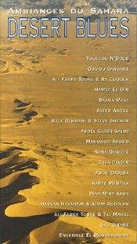

Я не люблю слушать сборники, Greatest Hits/The Best Of… и прочие подобные записи, созданные почти всегда только для того, чтобы сбить с толку заторможенного потребителя. Особенно же не люблю их претенциозных названий - место таким эпитафиям на кладбище. Однако и в этом унылом ряду встречаются редкие достойные исключения, одно из которых стоит держать в памяти всем, вступившим на нелегкий путь прослушивания world-music. Альбом(2CD box) называется Desert Blues. Ambiances du Sahara/Окрестности Сахары и выпущен локально известной фирмой World Network в 1995 (Нетипичный релиз для Network, выпускающей альбомы, записанные, в основном, собственными средствами). Бокс содержит 23 ранее изданные разными world-music лэйблами композиции 17 исполнителей(21, если быть точнее).Прекрасно изданный франко-германо-английский буклет поэтично описывает роль человеческого голоса в музыке избранного региона(Ближний Восток и Северная Африка) и кратко представляет звезд альбома. На мой взгляд, их об'единение под одной обложкой не совсем оправдано. Африканская музыка настолько сильно отличается(в одной только любимой мною музыке Мали царит поражающее стилевое разнообразие), что даже ее трудно акустически свести под одну обложку, не говоря уже про изначально иную музыку Ближнего Востока. Музыкальные пересечения исторически возникают в результате тесного смешения народностей и языков(например, стиль Wassolou), почти невозможных в наше время тотальных границ. Ближний Восток, к тому же, лучше всего защищен от взаимовлияний ортодоксальной религией, музыка там - вещь духовная.
Поэтому о «восточной» части альбома(не очень мне близкой) как-нибудь в другой раз, а расскажу я о том, что, на мой взгляд, раскрывает название Desert Blues. Отмечу только абсолютно магнетическую композицию Mahmoud Ahmed из Эфиопии - Ere Mela Mela/Meche Neu, настоящий шедевр.
Блюза в западном понимании в Африке не встретить, самая понятная для восприятия из представленной на альбоме - музыка Ali Farka Toure, к тому же записанная при участии признанных блюзовых звезд Ry Cooder(Diaraby) и Taj Mahal(Roucky). Однако, если соотноситься с пресловутым «blues feeling», подлинными блюзами этого альбома окажутся Sama Guent Guii Youssou N'dour(довольно редкая запись с альбома Yande Codou Sene & Youssou N'dour - Gainde Voices from the Heart of Africa) и Saa Magni Oumou Sangare. Они поют о боли, о горечи утраты близкого человека(Oumou Sangare), об усталости и надежде. Потрясающий голос Youssou N'dour только выигрывает на фоне примитивного гитарного аккомпанимента.
Сотрудничество коренного обитателя Сахары Baly Othmani, кочевника Tuareg, c известным «мульти-культурным» деятелем Steve Shehan, происходящим из индейцев чероки, отсылает к звучанию последних лет до-электрического блюза. Еще более радикальный образец подобного звучания - музыка Abou Djouba(к сожалению, совершенно неизвестного мне музыканта). Стилистически, на мой взгляд, он ближе всего к традиции griots.
Один из признанных музыкальных революционеров Африки Baaba Maal представлен здесь довольно нетипичными для себя композициями; особенно хорош инструментальный, почти чистый блюз, названный при этом Samba.
Ebraima 'Tata Dindin' Jobarteh из Гвинеи, представляющего музыку Manding, трудно даже отдаленно связать с blues feeling, однако эти записи интересны тем, что позволяют услышать чистое звучание kora. Подлинное открытие для тех, кому это имя известно только по его группе Salam.
Sali Sidibe демонстрирует более «сырую» версию прославленного Oumou Sangare стиля Wassolou. А наполненная внутренним светом и теплом финальная композиция Sona Diabate из Гвинеи M'boré удивительно схожа с луизианской музыкой cajun, напоминая об общем французском влиянии.
Альбом оставляет в памяти неплохое последействие(благодаря очень грамотно построенной концовке), но не создает ощущения целостности. На мой взгляд, более интересным и оправданным было бы решение разместить музыку столь несхожих регионов на отдельных CD, - каждая часть выглядела бы мощным законченным сплавом, а контраст стал бы убедительно очевиден.